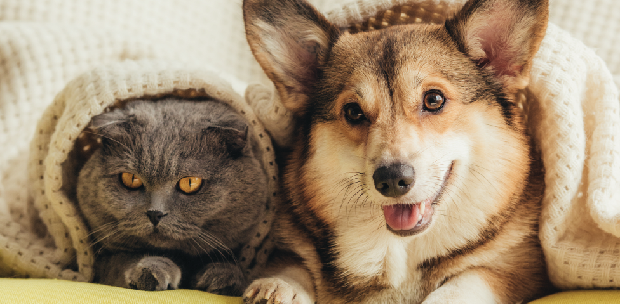

20/08/2020
Bichinhos de Estimação

Pensando em aumentar sua família? São Paulo está cheia de organizações que se dedicam a salvar a vida de animais e encontrar um lar permanente para eles. Adotar é um ato de amor e o novo membro da sua família vai encher sua casa de alegria - você certamente não vai se arrepender. Mas lembre-se de que adotar é uma grande responsabilidade, pois o seu novo amigo exigirá muita atenção e carinho e permanecerá em sua vida por anos.
Ler mais..
2 Comentarios